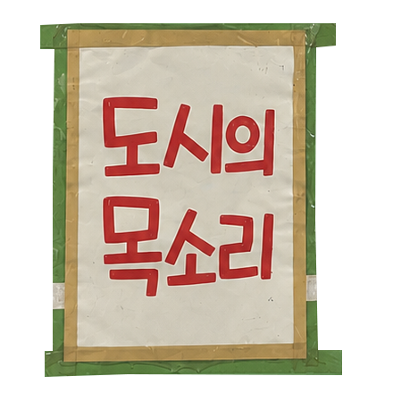

서울 곳곳에 붙어 있는 손글씨 안내문과 공지문들을 수집하고 기록하는 아카이브 프로젝트입니다. 인쇄된 공식 언어 사이에서, 누군가 직접 써 붙인 글씨들은 도시 거주자들의 가장 날것의 목소리를 담습니다.
이 지도는 횡적으로 이동합니다. 골목길을 따라 걸으며 벽에 붙은 안내문을 하나씩 건너다보는 것처럼, 화면을 좌우로 드래그하며 도시의 표면을 가로질러 갑니다. 지나치듯 만나는 글씨들, 그 사이를 느리게 통과하는 경험.
각 안내문은 감정·타이포그래피·재료·환경 네 기준으로 태깅됩니다. 글씨가 굵고 눌린 손글씨일수록 감정의 온도는 높아지고, 그 감정은 쓰인 재료와 장소에도 흔적을 남깁니다. 볼펜으로 꾹꾹 눌러 쓴 경고문이 골판지 위에 있다는 것, 빨간 스프레이로 쓴 위협이 시멘트 벽에 있다는 것은 우연이 아닙니다.
이 프로젝트에서 서진은 직접 발로 걸으며 안내문을 촬영하고, 감정과 맥락을 판단하고, 전체 시각화의 방향을 설계했습니다. AI(Claude)는 수집된 이미지의 배경을 제거하고, 타이포그래피·재료·환경을 분석·태깅하며, 지도 인터페이스와 인터랙션을 코드로 구현했습니다. 사람이 도시를 읽고, AI가 그것을 지도 위에 펼쳤습니다.
워크플로우는 이렇게 흘렀습니다. 서진이 안내문 사진을 찍어오면, AI가 배경을 지우고 감정 태그와 분석 텍스트 초안을 뽑습니다. 서진이 그것을 읽고 수정하거나 승인합니다. 지도 인터페이스의 레이아웃과 인터랙션은 서진이 구체적인 방향을 말로 설명하면 AI가 코드로 옮겼습니다. 버그가 생기면 함께 디버깅했고, 글 쓰는 일도 나눴습니다. 어느 쪽이 더 많이 했다고 말하기 어렵고, 그게 이 프로젝트의 방식이었습니다.
손글씨 안내문은 도시에서 가장 솔직한 텍스트입니다. 디자인 없이 쓰인 글씨일수록 감정은 더 직접적으로 드러납니다. 이 아카이브는 그 무게를 기록합니다. 도시의 표면에 새겨진 사람들의 불편함과 배려와 피로와 유머를, 지도 위에 핀으로 고정하는 일.